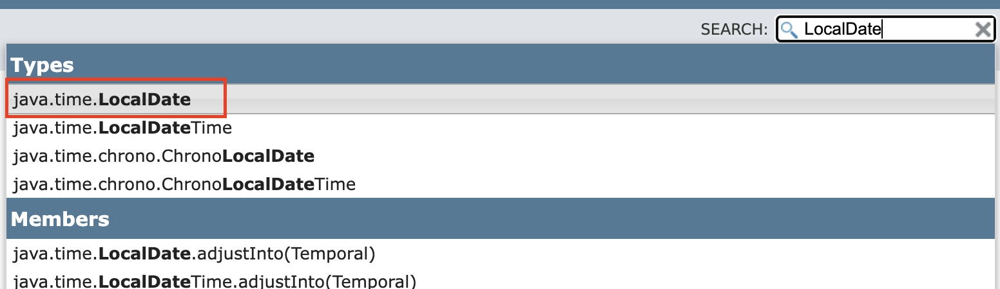
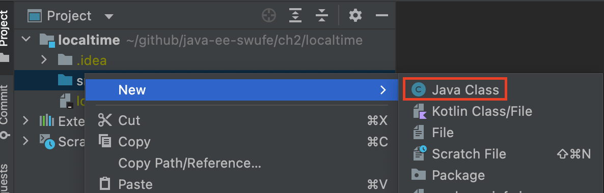
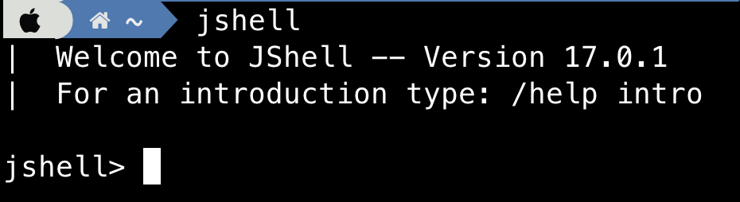
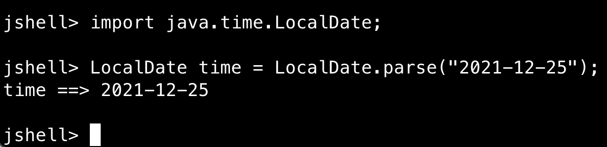
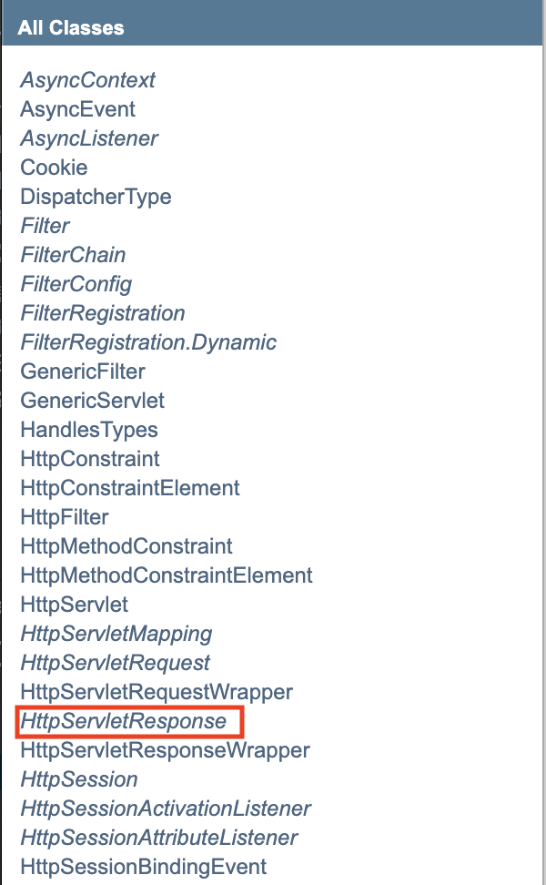
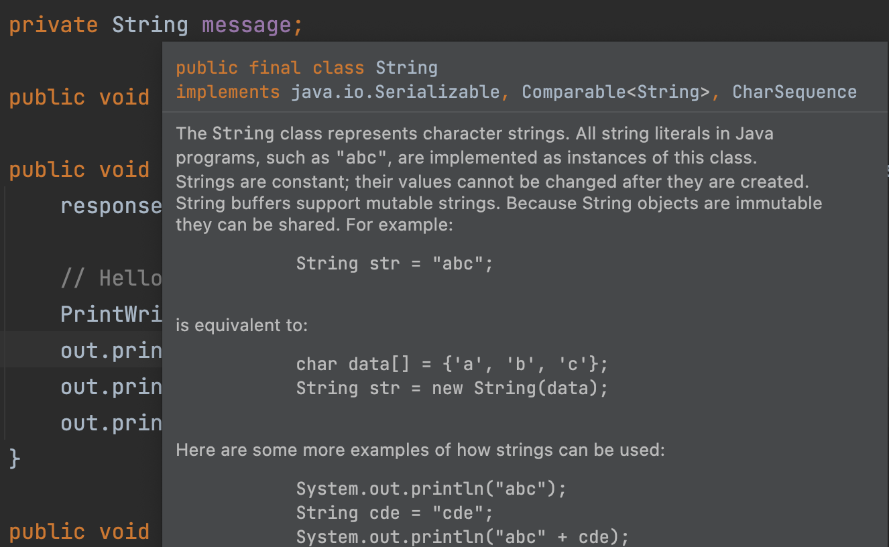

2.2 Search: The Way To Self-learning
When people start to learn a course or read a textbook, the first question that they may put forward to is probably: what is the key point? Now we would like to answer this question: this section is of great importance throughout this textbook, even throughout the journal of your programming learning.
Real beginners who start to learn programming often get lost when they are encountering something new, including new terms, new classes, and new methods. More or less, most people are afraid of things they are not familiar with, and this phenomenon is quite common even among expects. Technologies, especially the information technologies, are undergoing rapid changes, therefore it is impossible to rely on one book or one course if you would like to catch up with the state-of-the-art. How can you renew yourself? Well, perhaps the only way is to self-learning. And there is no doubt that a large number of "new"s would be the obstacles on your way to self-promotion. So how to escape from the vicious circle? The definite answer is short yet inspiring: search! search! search!
There are many awesome tools you can trust: search engines (e.g., Google, Bing), IDEs (e.g., Intellij IDEA), and websites (e.g., StackOverFlow). In this section, we will show you some practical skills of searching, and we believe it would be a lifelong benefit if you keep practicing.
Java Doc
Reading documentation is a basic skill while learning programming. For example, some students may find it difficult to understand this following code in Section 1.5 because java.time.LocalDate is a strange API.
<h2><%= java.time.LocalDate.now() %></h2>
Don't worry. Oracle provides the complete documentation for JDK (Java SE) API, often referred as Java Doc, according to which JDK version you are using, and it provides a user-friendly searching box. For example, in this textbook, we are using JDK 11. It is recommended to add this website into your bookmark.

After clicking the matching result, you will see the detailed API descriptions, including what this class does, what (public) methods and fields it has, and how to use its (public) methods and fields.
A date without a time-zone in the ISO-8601 calendar system, such as 2007-12-03.
For example, if you would like to convert a string "2008-8-8" (when Beijing Olympic was held) to the LocalDate object, please move to the Method Summary part, and after a quick glancing, you will notice
static LocalDate parse(CharSequence text) Obtains an instance of LocalDate from a text string such as 2007-12-03.
[!NOTE] All good APIs are generally intuitive, and it is straightforward to grasp what it does through its name.
Based on its summary, this method probably meets your requirement. But wait a moment, it seems that it only supports strings like "2008-08-08" with padding zero. Please don't be overly concerned. Just take a brave try, and let Java compiler tells you the result. Remember: talk is cheap, show me the code[1].
You can create a simple Java project (or file) using your favorite IDE (or editor) to conduct an experiment. To keep consistency, here we adopt IntelliJ IDEA. Click New Project button in the welcome screen of IntelliJ IDEA, or File | New | Project at the menu if you have already opened an project. In the New Project dialog, select Java, and then click Next button. It is fine to leave all options as default, and input an appropriate project name (default is untitled) in your desired location, and then click Finish button. Now it is time to crate a new Java class by right clicking the src folder.

Add a main() method:
import java.time.LocalDate;
public class Main {
public static void main(String[] args) {
LocalDate time = LocalDate.parse("2008-8-8");
System.out.println(time);
}
}
Click the green right triangle button (▶) on the left side of public class Main. Oops! An error, or technically, an exception, will be complained by Java compiler, and it is your task to fix this error. Go for it!
Sometimes it may be a bit cumbersome to crate a Java project for a simple API testing, and luckily, since Java 9, JShell, a Java read-eval-print loop (REPL)[2], has been introduced. Assume Java's path has been added into the PATH environment variable[3], you can open the terminal on Unix-like systems or CMD on Windows, and then input jshell:

And try to type System.out.println("Hello World!"); after the jshell> prompt. As usual Java code, type the following code:

If you want to exit from JShell, you can type /exit.
Back to the main focus, let's continue to learn how to use the Java Doc. Here are more examples:
- If you want to extract the days of the year from a
LocalDateobject (e.g., 33 days of2022-02-02), you will notice
int getDayOfYear() Gets the day-of-year field.
- If you want to determine whether a
LocalDateobject is a leap year[4], you will notice
boolean isLeapYear() Checks if the year is a leap year, according to the ISO proleptic calendar system rules.
As you can see, you will easily add many powerful weapons into your programming tool box if you get comfortable with Java Doc. Last but not least, many beginners may also ask this question: should I memorize those classes and methods as I recite English words? The answer can be "yes or no". To begin with, like English words, never recite them by rote without their context. Secondly, remember the basic syntax is necessary and as for the remaining, just keep in mind that no secret, I just have much experience[5]. As long as you can find the right place to search APIs to solve your problem, forgetting is not a big deal, especially when you have to switch between different programming languages regularly.
Java EE API
Similar to JDK document as well as any other frameworks and libraries, the ability to search Java EE API can be of great help. Similarly, based on which version you are using, you shall refer to the corresponding API documentations. For example, in this textbook, we are using Tomcat 9. It is also recommended adding this website into your bookmark.
[!NOTE] The skills discussed here is essentially the same with those in the last subsection.
Recall the code in HelloServlet.java, and some beginners might get lost when they see response.getWriter(). Again, ask the API documentation for help. Luckily, the number of classes introduced by Tomcat is limited, and we can easily locate HttpServletResponse under All Classes panel. By the way, you can use the shortcut (Ctrl + F in Windows/Linux, and Cmd + F in MacOS) to locate a specific word quickly.

And soon you will also find that getWriter() is not defined by HttpServletResponse, and instead, it is inherited from the interface javax.servlet.ServletResponse. Then follow this hint by clicking the hyperlink, and we shall find some information important:
(ServletResponse) Defines an object to assist a servlet in sending a response to the client. ... To send character data, use the
PrintWriterobject returned bygetWriter().
Still want to know about PrintWriter? Just ask the documentation for help, again! So, learning programming, especially when looking up API documentations, is much like looking up a dictionary.
IntelliJ IDEA
Modern IDEs, such as IntelliJ IDEA and Eclipse, provide built-in supports for API documentations looking-up, and they are often the main entry-point if you would like to inspect the source code. In this textbook, we will take IntelliJ IDEA, the most popular IDE among Java developers, as the running example.
Firstly, when you move the cursor to a Class, Interface, or method, the corresponding description of the API. For instance, the following illustrates what will pop up when you move the cursor to String.

You can practice this useful skill by moving the cursor to setContentType and HttpServlet, respectively.
Secondly, when you move the cursor and please keep pressing-down the Ctrl in Windows/Linux and Cmd in MacOS, you will notice that Class, Interface, method, and variables are becoming hyperlinks. So you could jump among Java codes and locate their implementations. FOr example, if you are curious about how println of PrinterWriter is implemented, you could see the following (don't worry if you cannot get grasp of the code itself):
public void println(String x) {
synchronized (lock) {
print(x);
println();
}
}
Anyway, all classes, interfaces and methods are not in a black-box now, and you can inspect them clearly.
[1] It is a famous quote by Linus Torvalds, the father of Linux.
[2] REPL is an interactive tool for leaning programming language, mostly found in scripting languages such as Python, JavaScript and Ruby, which enables users to write codes on the command line and see the results immediately.
[3] PATH is an environment variable that is used by Operating System to locate the executive programs (e.g., .exe on Windows) or java binaries (e.g., java or javac command). Instruction on how to set environment path for Java can be found here.
[4] Leap years are years where an extra, or intercalary, day is added to the end of the shortest month, February. For example, in the Gregorian calendar, each leap year has 366 days instead of 365.
[5] A Chinese old saying: 无他，但手熟尔.